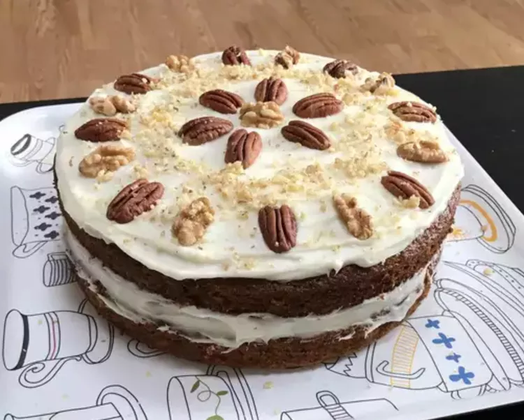
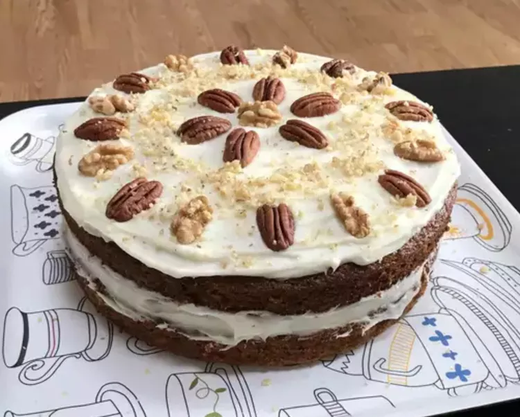
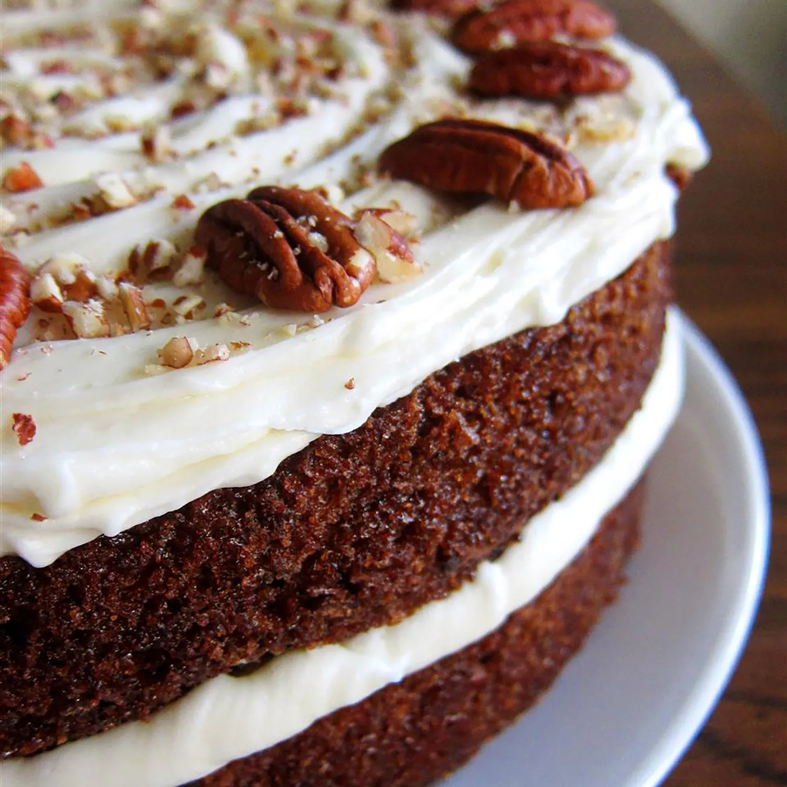

Carrot Cake

How to make Carrot Cake
You'll find a detailed ingredient list and step-by-step instructions in the recipe below, but let's go over the basics:
What's in Carrot Cake?
These are the ingredients you'll need to make your new go-to carrot cake recipe:
- Sugars: You'll need white sugar for the cake and confectioners' sugar for the frosting.
- Oil: A neutral oil, such as vegetable oil, adds moisture without imparting flavor.
- Eggs: Four whole eggs lend moisture and help bind the carrot cake batter together.
- Vanilla: Two teaspoons of vanilla extract for the cake (and one teaspoon for the frosting) enhances the flavor.
- Flour: All-purpose flour creates structure and brings the batter together.
- Leaveners: Baking soda and baking powder act as leaveners, which means they help the cake rise.
- Cinnamon: Ground cinnamon adds that warm, cozy flavor you associate with carrot cake.
- Salt: Salt enhances the flavors of the other ingredients, but it won't make the cake taste salty.
- Carrots: Of course, you'll need grated carrots!
- Pecans: Chopped pecans give the cake and frosting a pleasant crunch.
- Butter ans cream cheese: Butter and cream cheese are the key ingredients in the light and fluffy cream cheese frosting.
How to make Carrot Cake Step-by-Step
Here's a very brief overview of what you can expect when you make homemade carrot cake:
- Make the Batter: Beat the wet ingredients together, then mix in the dry ingredients. Stir in the carrots and fold in the pecans.
- Bake the cake: Pour the batter into the prepared cake pan or pans. Bake in the preheated oven until a toothpick comes out clean.
- Frost the cake: Beat the frosting ingredients together until smooth and creamy. Stir in the pecans. Frost the (completely cooled) cake.
How to Decorate Carrot Cake
Looking for impressive cake decorating ideas? Get inspiration from these Allrecipes community members:

 

Does Carrot Cake Need to Be Refrigerated?
Yes, carrot cake should be refrigerated. Since it's frosting with a fluffy cream cheese frosting, it shouldn't sit at room temperature for more than two hours at a time.
How Long Does Carrot Cake Last?
Store the frosted cake cake in an airtight container in the refrigerator for up to one week.
Can You Freeze Carrot Cake?
You can freeze unfrosted carrot cake for up to three months. Simply wrap the cooled cake in at least one layer of storage wrap, then at least one layer of foil. Thaw in the fridge overnight and frost according to the recipe.
Ingredients:
Cake:
- 2 cups white sugar
- 1 ¼ cups vegetable oil
- 4 eggs
- 2 teaspoons vanilla extract
- 2 cups all-purpose flour
- 2 teaspoons baking soda
- 2 teaspoons baking powder
- 2 teaspoons ground cinnamon
- ½ teaspoon salt
- 3 cups grated carrots
- 1 cup chopped pecans
Frosting:
- ½ cup butter, softened
- 8 ounces cream cheese, softened
- 4 cups confectioners' sugar
- 1 teaspoon vanilla extract
- 1 cup chopped pecans
Directions
Step 1
Preheat the oven to 350 degrees F (175 degrees C). Grease and flour a 9x13 inch pan.
Step 2
Beat sugar, oil, eggs, and 2 teaspoons vanilla together in a large bowl with an electric mixer until well combined. Mix in flour, baking soda, baking powder, cinnamon, and salt. Stir in carrots. Fold in pecans. Pour into the prepared pan.
Step 3
Bake in the preheated oven until a toothpick inserted into the center of the cake comes out clean, about 40 minutes. Let cool in the pan for 10 minutes, then turn out onto a wire rack and cool completely.
Step 4
To make the frosting: Beat butter, cream cheese, confectioners' sugar, and 1 teaspoon vanilla together in a large bowl with an electric mixer until smooth and creamy. Stir in chopped pecans. Frost the cooled cake.
